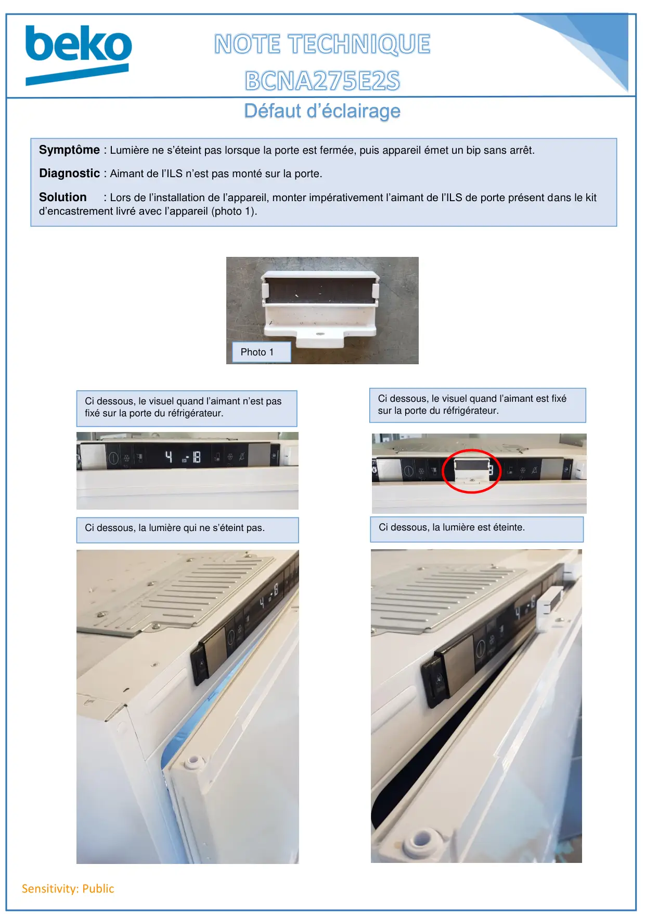

Aimant porte sur BCNA

Sensitivity: PublicDéfaut d’éclairageSymptôme : Lumière ne s’éteint pas lorsque la porte est fermée, puis appareil émet un bip sans arrêt.Diagnostic : Aimant de l’ILS n’est pas monté sur la porte.Solution : Lors de l’installation de l’appareil, monter impérativement l’aimant de l’ILS de porte présent dans le kitd’encastrement livré avec l’appareil (photo 1).Ci dessous, la lumière qui ne s’éteint pas.Ci dessous, le visuel quand l’aimant n’est pasfixé sur la porte du réfrigérateur.Ci dessous, le visuel quand l’aimant est fixésur la porte du réfrigérateur.Ci dessous, la lumière est éteinte.Photo 1
1 / 1